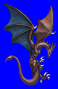
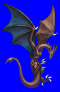
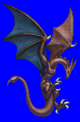
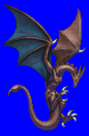

Height: 10 meters or longerWeight: Over 1 ton
Habitat: Forest, cave, temple Origin: England
Meaning: Derivative of the English word "viper"
A flying creature popular as a symbol of hostility on heraldry during the medieval period. It has batlike wings and a long tail adorned with poisonous barbs. Unlike other dragons, the wyvern does not breathe fire. Instead it attacks its prey directly with its claws and tail. The origin of the word "wyvern" is the synthesis of the words "wing" and "viper".